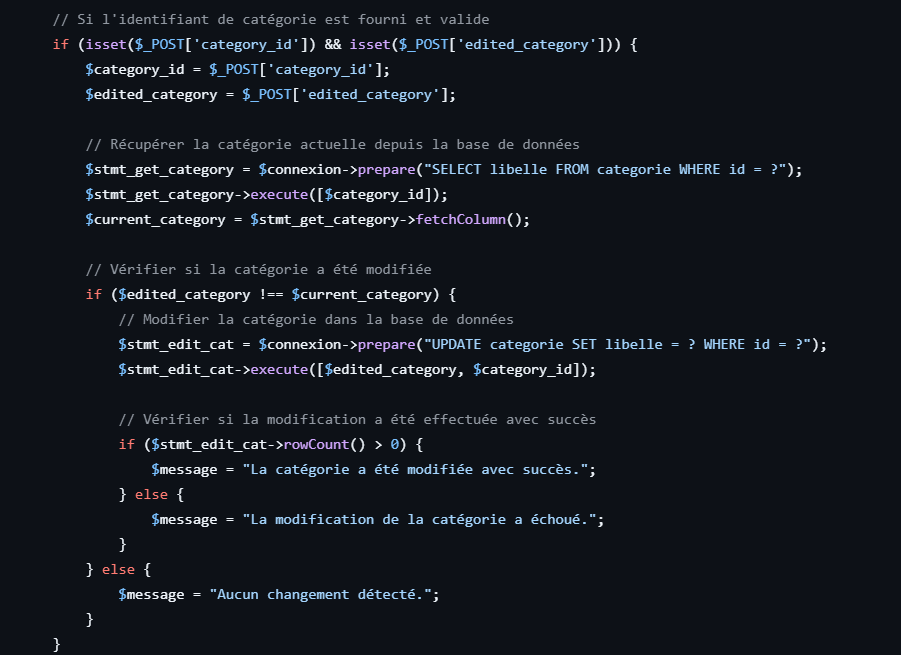
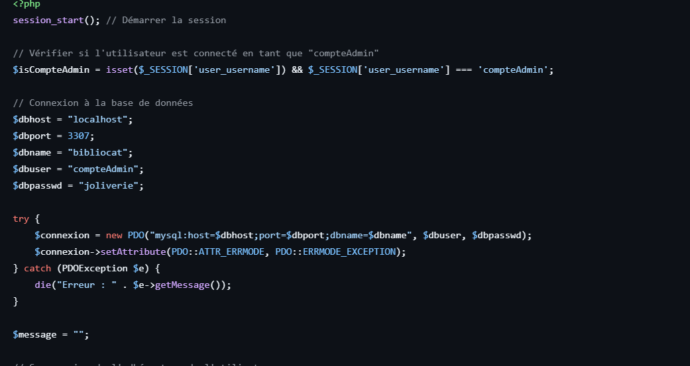
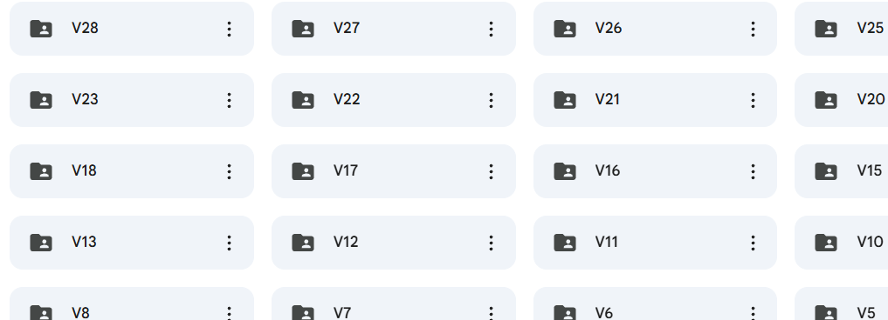

Le projet Bibliocat avait pour objectif la création, de zéro, d’un site web destiné aux visiteurs d’une bibliothèque. Réalisé en équipe de trois, ce projet a permis d’aborder l’ensemble des étapes fondamentales du développement d’un site internet : de la conception des maquettes à l’implémentation du code (frontend et backend), en passant par la modélisation et la gestion des bases de données.
Compétences acquises :
Exploiter des référentiels, normes et standards adoptés par le prestataire informatique :
En développement, il est important de conserver de bonnes pratiques et de respecter certaines normes pour avoir une organisation simple et claire, améliorer la portabilité d’un projet et faciliter le travail en équipe. Ce projet exigeait des règles de nommage, une documentation du code, etc. On peut constater ci-dessous que le code est documenté, que les variables sont nommées de manière explicite, que le code est bien indenté et sans répétition inutile.

Mettre en place et vérifier les niveaux d’habilitation associés à un service :
Je gère les différents droits des utilisateurs au sein du site en respectant les bonnes pratiques. Il est important de limiter les droits aux stricts besoins. Sur ce projet, nous distinguions les administrateurs, qui géraient les livres (ajout, suppression, etc.), des clients, qui réservaient et consultaient le catalogue. Chaque rôle disposait de permissions spécifiques via une gestion de session adaptée.

Gérer des sauvegardes :
Il est nécessaire de conserver les traces de son travail dans un espace accessible à toute personne concernée. Nous avons mis en place un système de versionning et de sauvegarde grâce à un espace de stockage partagé (Drive) pour centraliser le code et les documents de suivi, tous méthodiquement nommés pour plus de facilité.
Le lien du Drive se trouve au pied de la page.

Participer à la valorisation de l’image de l’organisation sur les médias numériques en tenant compte du cadre juridique et des enjeux économiques :
Il est essentiel de respecter l'identité numérique d'une organisation ainsi que son budget afin d'améliorer sa visibilité en ligne tout en respectant la législation. Ici, j'ai créé un site web de A à Z pour permettre à l'organisation d'élargir sa présence en ligne. Concernant les utilisateurs, seules les données indispensables au fonctionnement du site sont collectées, conformément au RGPD, comme l'atteste une capture de la base de données plus bas.
Participer à l’évolution d’un site Web exploitant les données de l’organisation :
Améliorer un site internet en utilisant les bases de données et le code existant de l’organisation. Nous avons utilisé la base de données pour développer les fonctionnalités de réservation, d'inscription des utilisateurs et de gestion des livres par les administrateurs.